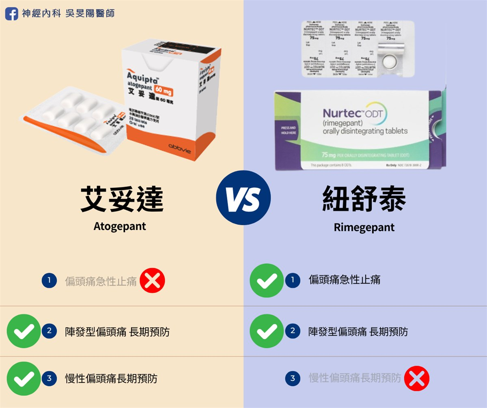

偏頭痛 2 種標靶藥比較│Atogepant & Rimegepant 服藥頻率、療效、選擇考量

前三篇介紹了兩種台灣上市的偏頭痛藥物：Atogepant 艾妥達、Rimegepant 紐舒泰，儘管在台灣有不同的適應症，但機轉上來說是同類藥物。有趣的是，兩者間的使用情境有重疊，都能作為陣發型偏頭痛患者的預防用藥！
兩者的比較及用藥選擇，請詳細請看下文～
前言
坦白說，這 2 種藥物今年才剛進來台灣，因此國內的使用經驗較少，然而歐美國家，這些新型標靶口服藥早已使用多年，光 Gepant 就有 5 種可使用，而台灣我們只有 2 種。
我近期參加的幾場講座，有許多講師分享國外的治療經驗。從國外研究來看， Rimegepant 除了急性止痛，也能預防偏頭痛發作。由於背後牽涉到較多研究資料，考量到篇幅及台灣只核准Rimegepant 給急性藥物適應症，因此，我在藥物專欄就不多做討論。
在台灣，因藥物選擇不多，加上核准的適應症彼此不同，在挑選兩種藥物的時候，不會有選擇障礙的問題。但在美國，Rimegepant 紐舒泰同時可急性使用，也能用來慢性預防，就有討論的空間。
適應症與用途
Atogepant (Aquipta 艾妥達)：主要用於預防，包括陣發性偏頭痛和慢性偏頭痛。它是一種每日服用的口服藥物，適合需要長期預防偏頭痛的患者。
Rimegepant (Nurtec 紐舒泰)：既可用於急性治療偏頭痛（不管是有預兆發生的、或是無預兆的偏頭痛），也可用於預防陣發性偏頭痛。它可以每兩天或是每天服用一次的口服溶解錠，適合需要同時進行急性治療和預防的患者。病患不再需要分開吃「止痛藥」和「預防藥」
- 如果主要目標是降低偏頭痛發作頻率，Atogepant 可能會較適合。
- 如果需要同時處理急性發作以及減少頭痛頻率，Rimegepant 可能會是較好的選擇。
- 如果罹患的是慢性偏頭痛，會比較推薦專為「每日預防」設計的 Atogepant。
服藥頻率和方式
| Aquipta 艾妥達 | Nurtec 紐舒泰 | |
|---|---|---|
| 適應症 | 陣發性偏頭痛 & 慢性偏頭痛 預防用藥 | 偏頭痛急性止痛 |
| 劑型 | 口服錠 | 口溶錠 |
| 劑量 | 10mg／30mg／60mg 每日一次 | 急用：75mg 需要時使用；預防：75mg 每兩天一次 |
| 重度肝功能不全 | 避免使用 | 避免使用 |
| 重度腎臟病 | 10mg | 避免使用 |
Atogepant (Aquipta 艾妥達) 是口服錠劑，每日服用一次。一般劑量為 10 mg、30 mg 或 60 mg。台灣 2024 上市的是 60mg 的劑型，2025 年上市 10mg 的劑型，可給特殊族群（重度腎臟病友）使用。
Rimegepant (Nurtec 紐舒泰) 是口溶錠，可於在舌上溶解，用於急性發作時可立即緩解頭痛，用於預防用途時則每兩天服用一次。兩種用途的單次劑量皆為 75 mg。
- 其中，Rimegepant 的溶解錠形式，會比較適合頭痛發作伴隨嚴重噁心症狀、有吞嚥困難、不適合喝水或是取得水不易的病友們。
臨床療效比較
研究顯示，Atogepant (Aquipta 艾妥達) 在第 1 至 12 週，或者是第 9 至 12 週都顯示出，平均每月偏頭痛天數改善的幅度較大；Atogepant 在 12 週內平均減少了 1.65 天的每月偏頭痛天數，且在減少急性用藥天數方面也優於 Rimegepant (Nurtec 紐舒泰)。
根據目前我找到的文獻，客觀顯示了：Atogepant 在減少急性藥物使用天數和提升生活品質方面的效果優於 Rimegepant。
資料來源：Ailani J, et al. Headache 2024;64(10):1253-1263
Rimegepant 在急性治療中，Rimegepant 可迅速緩解偏頭痛症狀，如頭痛、噁心和畏光。在預防性治療中，Rimegepant 也能有效減少每月偏頭痛天數，但效果略遜於 Atogepant。
資料來源：Ailani J, et al. Headache 2024;64(10):1253-1263。這是扣掉安慰劑之後多出來的有效比例，換算成「需要治療人數（NNT）」分別是 4.8 人與 13.0 人。
安全性與副作用
實際上，從個別藥物的臨床試驗中，Atogepant 和 Rimegepant 兩者的安全性與副作用是差不多的。它們皆可能出現噁心、疲勞、口乾和頭暈等副作用。Atogepant 則有便秘的副作用（6.9%）、Rimegepant 比較不會有便祕情形。兩者皆屬於 CGRP 受體拮抗劑，因此從機轉上來看，安全性較傳統偏頭痛預防藥物高。
- Atogepant (Aquipta 艾妥達)：噁心、便秘、疲勞和食慾下降。
- Rimegepant (Nurtec 紐舒泰)：噁心、蛋白尿、胃痛和消化不良。
以上這些副作用通常是輕微至中等程度，因此多數患者可以忍受，遇到了較不會導致藥物中斷。
另外，研究顯示，因副作用導致受試者停藥的比率，Atogepant 組的停藥率在數值上略高於 Rimegepant 組，但這個差異沒有達到統計上的顯著性。這或許代表，儘管 Atogepant 引起便祕機會較多，也會有部分病人而不願再使用它，但就研究結論來說，是不至於導致停藥的比例超過 Rimegepant 太多。
藥物交互作用
某些抗真菌藥、抗病毒藥和抗生素可能會影響這兩種藥物的代謝。因此在使用前務必告知醫師所有正在服用的藥物，以確保用藥安全喔！
- Atogepant 的交互作用主要涉及 CYP3A4 酶和 OATP 轉運體，其交互作用相對較少，且受食物的影響較低。
- Rimegepant 的交互作用更為複雜，除了 CYP3A4 酶，還涉及 P-gp 和 BCRP 轉運體，因此在併用其他藥物時，需更加謹慎～
特殊族群
目前不論是針對兒童、孕婦或是哺乳期婦女使用 Atogepant 和 Rimegepant 的研究資料皆有限，因此安全性無法證實。
特別的是，研究指出單次服用 Rimegepant 75 mg 後，藥物分泌至母乳的相對嬰兒劑量（RID）僅為 0.51%，低於 10% 的安全標準，因此其在哺乳期可能是相對安全的選擇。
另外，Atogepant 和 Rimegepant 均屬於 CGRP 受體拮抗劑，不會引起血管收縮，因此對於有心血管疾病或對翠普登（Triptans） 使用禁忌的患者來說，是安全的選擇。
成本效益（CP 值）
資料來源：Ailani J, et al. Headache 2024;64(10):1253-1263。此為美國的藥價資料。
研究顯示，與安慰劑相比，在預防陣發性偏頭痛方面，使用 Atogepant 的治療成本明顯低於 Rimegepant。如上圖所示，為一名患者達到良好療效（即偏頭痛天數減少 50% ）的目標，使用 Rimegepant 的治療花費會比 Atogepant 高出約 $60,000 美元
需留意的小細節
- 討論成本效益的這篇文章是美國的資料，Atogepant 和 Rimegepant 的價格和保險給付情況會因地制宜，因此統計出來的實際成本不能直接套用在本國情境。
- 文章本身是透過間接治療比較，因此條件不一定公正。
結語│我該選擇哪種口服標靶藥？
選擇的考量在於它們的用途、劑量、服藥頻率，以及病友的頭痛型態、個人喜好。
先看天數：
- 每月頭痛超過 15 天 → 優先考慮 Atogepant
- 每月頭痛少於 15 天 → 優先考慮 Rimegepant
- 如果喜歡「一藥兩用，痛的時候吃一顆，想預防就兩天吃一顆」，同時治療急性發作和預防，Rimegepant 是最佳選項。
- 如果需要長期預防偏頭痛（最大化地降低發作次數）、偏好每日固定服藥，可以選擇 Atogepant，又有較低的治療成本。
- 若患者需要較有彈性的用藥策略（例如備孕女性、以及止痛預防隨時切換），或是發作時常伴隨嚴重噁心嘔吐，Rimegepant 會更符合使用需求。
- Atogepant 是更專業的全職盾牌；Rimegepant 是更聰明的多功能瑞士刀。
- 若價格高昂不太能接受，也希望藥效優於傳統藥物，可以考慮長效針劑：肉毒桿菌、單株抗體（點閱連結快速看：我該選擇哪種針劑藥物？）
延伸閱讀
偏頭痛藥物
- 偏頭痛「預防藥治療」攻略：傳統口服藥 (一)
- 偏頭痛「預防藥治療」攻略：長效針劑 (二)
- 偏頭痛「預防藥治療」攻略：長效針劑比較和選擇 (三)
偏頭痛預防性治療攻略：新型口服標靶藥物 (四)
參考資料
- Nurtec ODT (rimegepant) vs Qulipta (atogepant)
- Comparing Efficacy and Safety of Atogepant and Rimegepant for Migraine Prevention
- Atogepant superior to rimegepant in reducing monthly migraine days at 12 weeks
- How Does Atogepant Compare With Rimegepant for Migraine?
- Atogepant vs Rimegepant: Which Is Superior as a Preventive Migraine Treatment?
- Cost per treatment responder analysis of atogepant compared to rimegepant for the preventive treatment of episodic migraine
- Comparative efficacy, quality of life, safety, and tolerability of atogepant and rimegepant in migraine prevention: A matching-adjusted indirect comparison analysis
- Rimegepant and atogepant: novel drugs providing innovative opportunities in the management of migraine
- Qulipta vs. Nurtec: Differences, similarities & side effects
- Rimegepant 藥物使用說明
- Atogepant 藥物使用說明 (簡體)